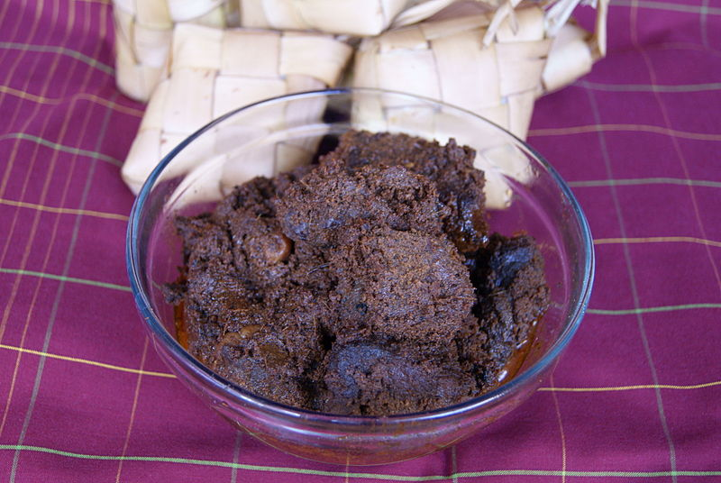

Beef Rendang

Description
Rendang is a Minang dish originating from the Minangkabau region in West Sumatra, Indonesia.
Ingredients
- Beef, properly cut into biteable pieces
- Salt and MSG
- Coconut milk
- Cooking oil
- Secret spices
Steps
- Heat your Wok and put a bit cooking oil
- When the oil hot, fry the Secret Spices
- If smell good, put the Beef and Coconut Milk
- Cook and stir periodically until it turn Dark Brown
- Add Salt and MSG to fix the taste